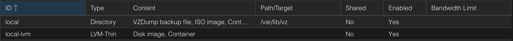

Proxmox VE(以下稱PVE)是基於Debian作業系統的開源伺服器虛擬化平台，這類的文章我不會寫得太詳細，就只是記錄一些重點，才會不太久沒弄就忘記。今天要講的是，把新的硬碟空間加入到local-lvm，讓虛擬機(VM)可以有更多空間使用。
local: 儲存ISO Images、容器模板(CT Templates)、備份空間
local-lvm: 儲存虛擬機(以下稱VM)和容器(以下稱CT)的虛擬硬碟
Datacenter -> Storage即可看到上圖，local的Type是Directory，local-lvm的Type是LVM-Thin，LVM的好處是放VM或CT可以有快照(Snapshot)功能，缺點就是無法直接放檔案到LVM區塊。之前遇到的另一個小問題就是，LVM可以一直加上去，即便已經超過硬碟的容量，這導致顯示的容量與實際不符，手賤創超過，然後裝完VM後又在把超過的LVM刪掉，VM就無法從網頁控制面板刪除，要手動打指令去很多路徑刪掉VM的檔案。
lsblk檢查分區
PVE通常預設會選擇sda安裝系統，並把sda的部分空間給local-lvm，如果你有第二個硬碟那通常編號是sdb
1. fdisk /dev/sdb進入fdisk指令頁面(輸入m獲得指令列表)
2. 輸入d刪除分割區
3. 輸入n新增分區(基本預設值即可，一直按下Enter)
4. 輸入w儲存設定
5. 再次輸入lsblk應該會看到/dev/sdb1的分區
6. mkfs.ext4 /dev/sdb1格式化硬碟
7. Volume Group中文稱卷組(以下簡稱VG)，由多個硬盤或分區組成的一個邏輯存儲單元，VG可以動態變動硬碟或分區。
8. vgextend pve /dev/sdb1將sdb1分區作為VG儲存空間
9. vgdisplay查看VG資訊，這時候Free PE / Size會比原本的空間還多
10. Logical Volume Manager中文稱邏輯卷管理器(以下簡稱LVM)，上面有稍微介紹過了，它是在VG之上建立的一個邏輯卷管理系統，一樣可以動態調整儲存空間大小
11. 如果不想了解太多沒關係，總之要把VG的儲存空間加入到LVM，才可以有更多虛擬空間供VM使用。
12. lvextend -L +100G /dev/pve/data增加100G的儲存空間vgdisplay中的Free PE，這就是最多可以增加的容量。
OK! 這樣就完成了，網頁控制面板點擊local-lvm，就能看到儲存空間有增加了，也可以用lvdisplay顯示LV可使用的儲存空間。